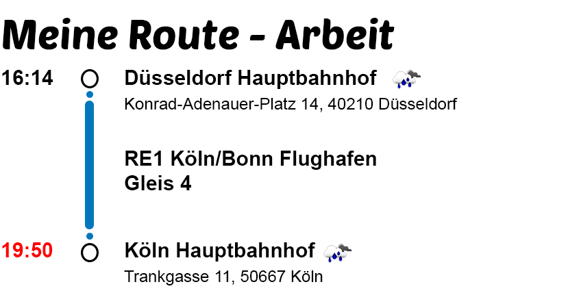
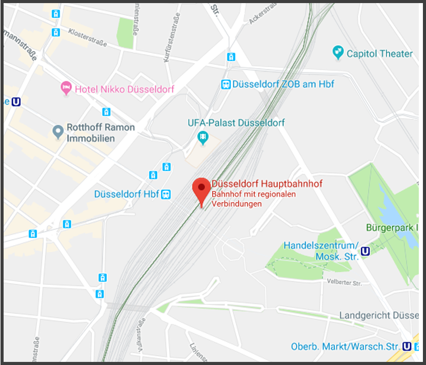

<ion-header>
  <ion-navbar>
    <ion-title>Detail</ion-title>
  </ion-navbar>
</ion-header>

<ion-content class="content_page">

  <ion-card text-wrap *ngIf="votingInfo" class="vote_card">
    <ion-card-content>
      
      
      <br>
      
    </ion-card-content>
  </ion-card>


</ion-content>

<ion-footer class="footer" *ngIf="!alternativ">
  <ion-toolbar>
    <span class="alternativ-infos-header">Streckenstörung auf deiner Route</span>
    <br>
    <span class="alternativ-infos">1 Stunde 20 min schnellere Route gefunden</span>

    <button ion-button color="light" style="float: right; border-radius: 40px; margin-right: 10px;" (click)="changeAlternativ()"><ion-icon ios="ios-arrow-round-forward" md="md-arrow-round-forward"></ion-icon></button>

  </ion-toolbar>
</ion-footer>

<ion-footer class="footer" *ngIf="alternativ">
  <ion-toolbar>
    <span class="alternativ-infos-header">Schnellere Route berechnet</span>
    <br>
    <span class="alternativ-infos">1 Stunde 20 min schneller</span>

    <button ion-button color="light" style="float: right; border-radius: 40px; margin-right: 10px;" (click)="changeAlternativ()"><ion-icon ios="ios-checkmark" md="md-checkmark"></ion-icon></button>

  </ion-toolbar>
</ion-footer>


